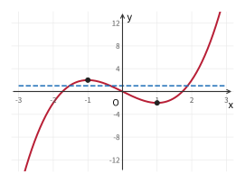

ホーム ＞ 数学II ＞ 微分法（接線・増減・極値）
方程式 \(x^3-3x=1\) の異なる実数解の個数を求めよ。
定数 \(k\) を右辺に分離し、\(y=f(x)\) のグラフと水平線 \(y=k\) の共有点を数える。極大値・極小値との大小で個数が決まる。
\(x^3-3x=k\) の実数解は、\(y=x^3-3x\) と \(y=k\) の共有点の個数。
\[y'=3x^2-3=0\ \Rightarrow\ x=\pm1\]
極大値 \(2\)、極小値 \(-2\)。

\(k=1\) のとき \(3\) 個。
【答案（テストに書く形）】
答